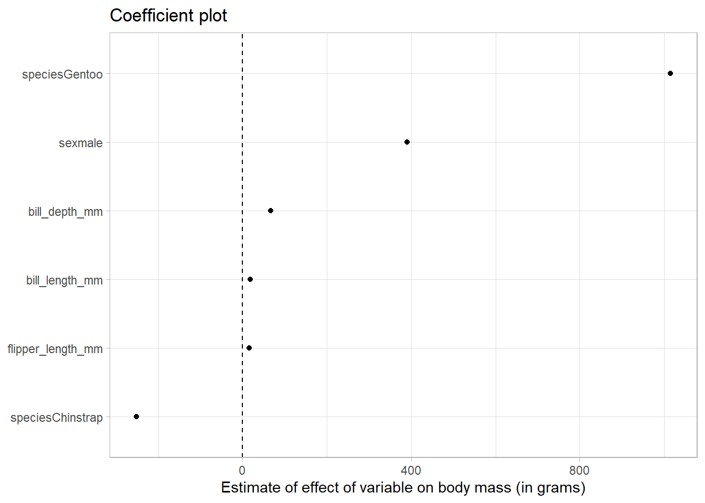
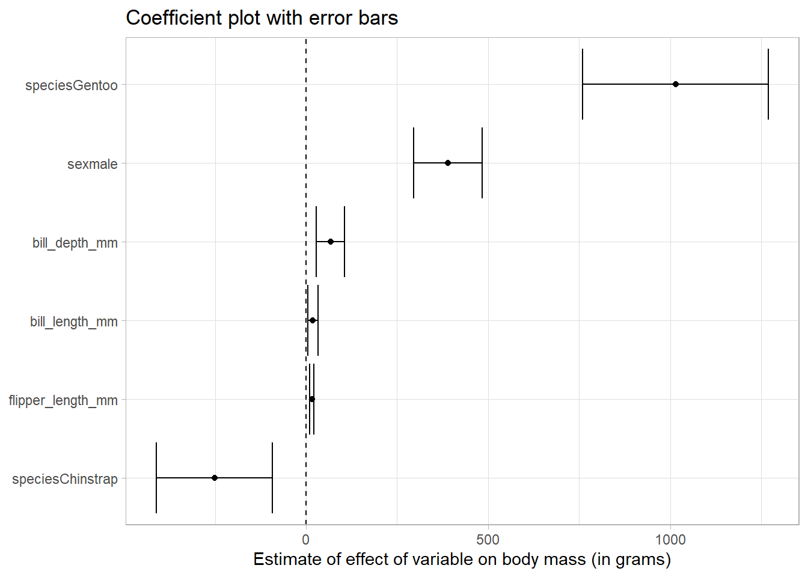
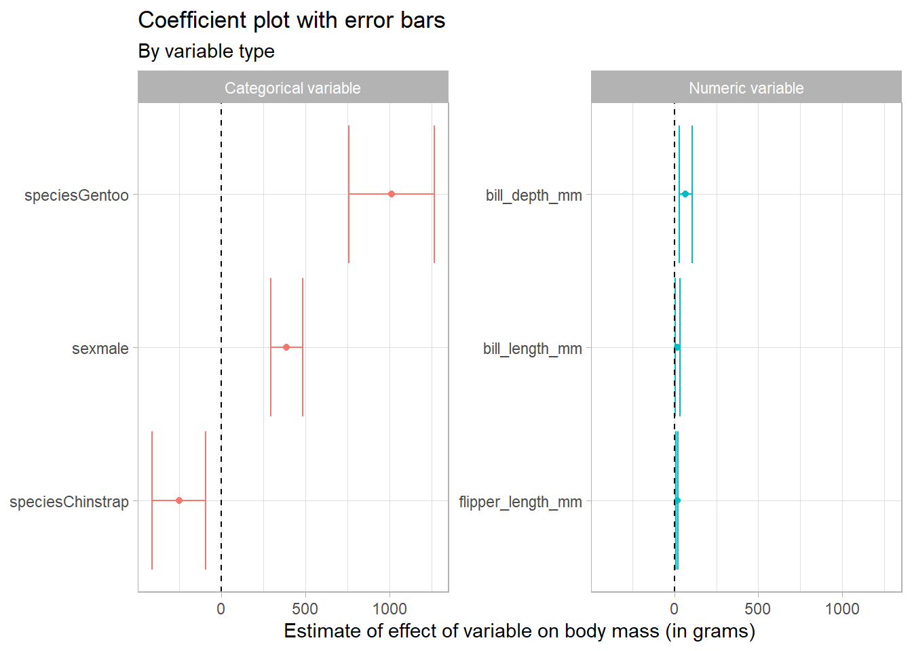

Coefficient plots in ggplot
Drawing coefficient plots in R and ggplot.
Recently a colleague asked how they could quickly draw a coefficient plot in R. In Stata, this is relatively simple - just run your regression and use the command coefplot afterwards. This produces a graphic that is perfectly acceptable for exploratory data analysis, but leaves something to be desired if you want to use it in a publication.
This post shows you how to draw coefficient plots in R and ggplot, and is extensible for use with regressions beyond the basic lm command.
Data
For this example we will use data from the lovely Palmer Penguins package from Allison Horst. The penguins dataset is a great toy dataset for exploration and visualization, based on genuine data collected by Dr. Kristen Gorman at the Palmer Station in Antarctica.
Basic regression
We begin with a basic regression where our dependent variable is penguin body weight in grams, and independent variables are the dimensions of the penguins’ bills, flipper length, as well as species and sex.
library(tidyverse)
theme_set(theme_light())
# read in data
df <- palmerpenguins::penguins
# basic regression
basic_reg <- df %>%
lm(body_mass_g ~ bill_length_mm + bill_depth_mm + flipper_length_mm + species + sex, data = .)
basic_reg
Call:
lm(formula = body_mass_g ~ bill_length_mm + bill_depth_mm + flipper_length_mm +
species + sex, data = .)
Coefficients:
(Intercept) bill_length_mm bill_depth_mm flipper_length_mm
-1460.99 18.20 67.22 15.95
speciesChinstrap speciesGentoo sexmale
-251.48 1014.63 389.89 This produces a rather messy output. It includes both the regression specification and the coefficients.
Tidy with broom package
We can use the broom package to return a tibble, a neat data object that is easy to work with.
library(broom)
tidy_reg <- df %>%
lm(body_mass_g ~ bill_length_mm + bill_depth_mm + flipper_length_mm + species + sex, data = .) %>%
tidy()
tidy_reg# A tibble: 7 × 5
term estimate std.error statistic p.value
<chr> <dbl> <dbl> <dbl> <dbl>
1 (Intercept) -1461. 571. -2.56 1.10e- 2
2 bill_length_mm 18.2 7.11 2.56 1.09e- 2
3 bill_depth_mm 67.2 19.7 3.40 7.45e- 4
4 flipper_length_mm 16.0 2.91 5.48 8.44e- 8
5 speciesChinstrap -251. 81.1 -3.10 2.09e- 3
6 speciesGentoo 1015. 130. 7.83 6.85e-14
7 sexmale 390. 47.8 8.15 7.97e-15Great! This output is much easier to deal with.
Coefficient plot
Let’s try and make a coefficient plot.
tidy_reg %>%
filter(term != "(Intercept)") %>%
# reorder the coefficients so that the largest is at the top of the plot
mutate(term = fct_reorder(term, estimate)) %>%
ggplot(aes(estimate, term)) +
geom_point() +
# add in a dotted line at zero
geom_vline(xintercept = 0, lty = 2) +
labs(
x = "Estimate of effect of variable on body mass (in grams)",
y = NULL,
title = "Coefficient plot"
)
We can see that relative to Adelie penguins (the base category), Gentoo penguins weigh more and Chinstrap penguins weigh less.
Further, male penguins weigh more than females.
Error bars
To get the error bars, we specify that we want a confidence interval when we use the tidy command from the broom package, like so: tidy(conf.int = TRUE)
tidy_reg_conf_int <- df %>%
lm(body_mass_g ~ bill_length_mm + bill_depth_mm + flipper_length_mm + species + sex, data = .) %>%
tidy(conf.int = TRUE)
tidy_reg_conf_int# A tibble: 7 × 7
term estimate std.error statistic p.value conf.low conf.high
<chr> <dbl> <dbl> <dbl> <dbl> <dbl> <dbl>
1 (Intercept) -1461. 571. -2.56 1.10e- 2 -2585. -337.
2 bill_length_mm 18.2 7.11 2.56 1.09e- 2 4.22 32.2
3 bill_depth_mm 67.2 19.7 3.40 7.45e- 4 28.4 106.
4 flipper_length_mm 16.0 2.91 5.48 8.44e- 8 10.2 21.7
5 speciesChinstrap -251. 81.1 -3.10 2.09e- 3 -411. -92.0
6 speciesGentoo 1015. 130. 7.83 6.85e-14 760. 1270.
7 sexmale 390. 47.8 8.15 7.97e-15 296. 484. Now in our tibble we get columns called conf.low and conf.high.
To plot these, we use an additional geometry in our ggplot, called geom_errorbarh. Here the h at the end specifies we want it in the horizontal direction. We map the conf.low and conf.high variables to xmin and xmax respectively.
tidy_reg_conf_int %>%
filter(term != "(Intercept)") %>%
# reorder the coefficients so that the largest is at the top of the plot
mutate(term = fct_reorder(term, estimate)) %>%
ggplot(aes(estimate, term)) +
geom_point() +
geom_errorbarh(aes(xmin = conf.low, xmax = conf.high)) +
# add in a dotted line at zero
geom_vline(xintercept = 0, lty = 2) +
labs(
x = "Estimate of effect of variable on body mass (in grams)",
y = NULL,
title = "Coefficient plot with error bars"
)
Because none of the error bars cross the dotted line at zero, we conclude that the point estimates of the effects are significantly different from zero at the five percent level.
Categories of predictor
Finally, let’s facet the variables by type.
We use the case_when command from dplyr to call any variable containing mm a numeric variable, and the others categorical. We colour our bars and points by variable type, and facet_wrap to make a small multiple chart. This makes it easy to differentiate between the different types of variables.
tidy_reg_conf_int %>%
filter(term != "(Intercept)") %>%
# create a type variable with case_when
mutate(type = case_when(
str_detect(term, "mm") ~ "Numeric variable",
TRUE ~ "Categorical variable"
)) %>%
# reorder the coefficients so that the largest is at the top of the plot
mutate(term = fct_reorder(term, estimate)) %>%
ggplot(aes(estimate, term, colour = type)) +
geom_point() +
geom_errorbarh(aes(xmin = conf.low, xmax = conf.high)) +
# add in a dotted line at zero
geom_vline(xintercept = 0, lty = 2) +
# remove the legend as the facet show that information
theme(legend.position = "none") +
# facet by type
facet_wrap(~type, scales = "free_y") +
labs(
x = "Estimate of effect of variable on body mass (in grams)",
y = NULL,
title = "Coefficient plot with error bars",
subtitle = "By variable type"
)
In this way we can see that the scaling of the variables can have an impact on how we perceive the results. Because the bill and flipper dimensions are measured in mm, and the body mass in grams, we are seeing the effect of an additional mm of bill depth, for example, on body mass in grams, which appears quite small.
Conclusion
Great - I hope that this was useful! It’s possible to easily customise your coefficient plots in ggplot, adding labels and colours to help your reader understand your regression results in a glance.